The RMD file to follow along: https://scrnaseq-workshop.s3-us-west-2.amazonaws.com/4_markers.Rmd
finding markers and differential expression analysis
After clustering, differential expression testing (DE analysis, similar to bulk RNA seq) finds gene signatures of each cluster/cell population, to give more insights into biology.
many proposed methods
(for Seurat, we recommend default “wilcox” or “t”, good balances between speed and accuracy)

important considerations
keep things simple first and look at the results (try not aligning, not regressing)
determine what variables to regress out (batch, nCount_RNA, percent_mito, cell cycle, if needed) during scaling (note this only affects dimension reduction and clustering)
library(Seurat)
library(tidyverse)
# load data from saved RDS
sobj <- readRDS("_vignettes/data/filtered_sobj.rds")
# log normalize
sobj_l <- NormalizeData(sobj) # <- skip this step if using scran normalization
sobj_l <- ScaleData(sobj_l,
vars.to.regress = c("nCount_RNA",
"percent_mito"))
# alternatively, sctransform is a one step normalization and scaling process
sobj_sc <- suppressWarnings(SCTransform(object = sobj, # sctransform has some unhelpful warnings
vars.to.regress = c("percent_mito"), # already corrects for transcript number
verbose = FALSE))- use normalized data for DE (slot is dependent on normalization method, also don’t use integrated assay)
# before normalization, "data" slot is the same as counts
sobj@assays$RNA@data[101:105,101:105] # raw counts
#> 5 x 5 sparse Matrix of class "dgCMatrix"
#> ATCTTGACCTCCCA-1 ATCTTTCTTGTCCC-1 ATGAAGGACCTGTC-1
#> PGD 2 . .
#> APITD1 . . .
#> DFFA . . .
#> PEX14 . . .
#> CASZ1 . . .
#> ATGACGTGATCGGT-1 ATGAGAGAAGTAGA-1
#> PGD . .
#> APITD1 . .
#> DFFA . .
#> PEX14 . .
#> CASZ1 . .
# after log normalization, results are stored in "data" slot
sobj_l@assays$RNA@data[101:105,101:105] # normalized
#> 5 x 5 sparse Matrix of class "dgCMatrix"
#> ATCTTGACCTCCCA-1 ATCTTTCTTGTCCC-1 ATGAAGGACCTGTC-1
#> PGD 2.727586 . .
#> APITD1 . . .
#> DFFA . . .
#> PEX14 . . .
#> CASZ1 . . .
#> ATGACGTGATCGGT-1 ATGAGAGAAGTAGA-1
#> PGD . .
#> APITD1 . .
#> DFFA . .
#> PEX14 . .
#> CASZ1 . .
# after sctransform, results are stored in new assay "SCT"
sobj_sc@assays$SCT@data[101:105,101:105] # normalized
#> 5 x 5 sparse Matrix of class "dgCMatrix"
#> ATCTTGACCTCCCA-1 ATCTTTCTTGTCCC-1 ATGAAGGACCTGTC-1
#> PGD 1.386294 . .
#> APITD1 . . .
#> DFFA . . .
#> PEX14 . . .
#> CASZ1 . . .
#> ATGACGTGATCGGT-1 ATGAGAGAAGTAGA-1
#> PGD . .
#> APITD1 . .
#> DFFA . .
#> PEX14 . .
#> CASZ1 . .
sobj_sc@assays$RNA@data[101:105,101:105] # still same as counts, make sure not to use this!
#> 5 x 5 sparse Matrix of class "dgCMatrix"
#> ATCTTGACCTCCCA-1 ATCTTTCTTGTCCC-1 ATGAAGGACCTGTC-1
#> PGD 2 . .
#> APITD1 . . .
#> DFFA . . .
#> PEX14 . . .
#> CASZ1 . . .
#> ATGACGTGATCGGT-1 ATGAGAGAAGTAGA-1
#> PGD . .
#> APITD1 . .
#> DFFA . .
#> PEX14 . .
#> CASZ1 . .Note that marker genes found is very dependent on clustering and the compared populations
P‐values are inflated, due to the cyclic nature of identifying the same variable genes as markers, which were used for dimension reduction and clustering. However, the ranking of genes based on P‐values is unaffected.
Sidebar: How to regress out cell cycle heterogeneity (and do you need to?)
# many options to assess cell cycle effects on gene expression
# 1. ridge plot on key genes (from Seurat2 tutorial)
RidgePlot(sobj_l,
features = c("MKI67", # smoothing eaves plots empty if no significant amount of cells express it
"MCM6",
"TOP2A",
"PCNA",
"ZFP36"), # how actual robust gene expression should look
ncol = 2)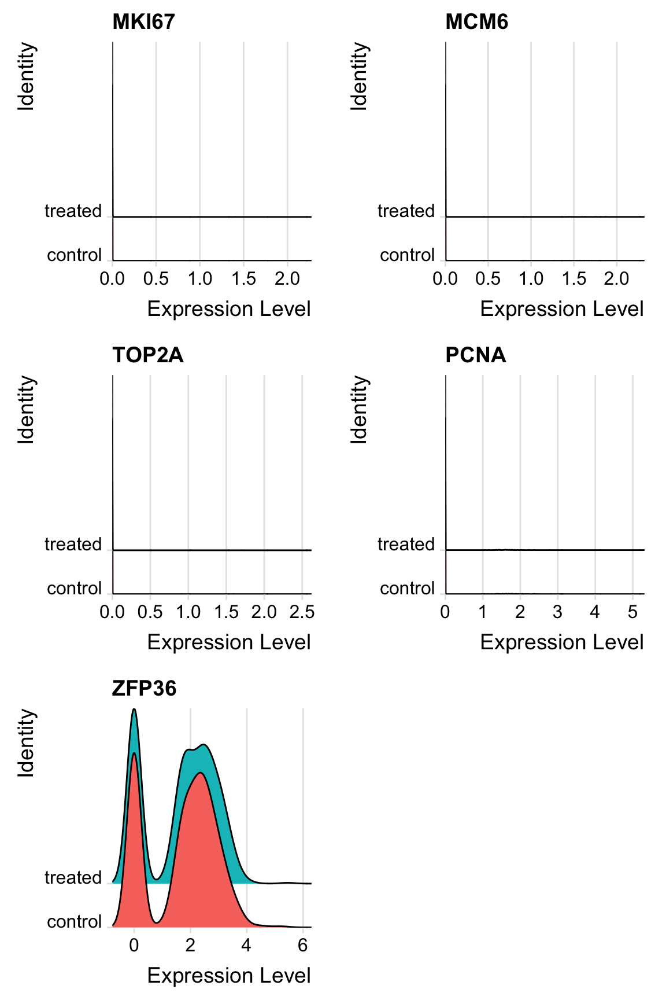
# see https://satijalab.org/seurat/v3.0/cell_cycle_vignette.html for a case where some cells are actively cycling
# 2. assess phase and PCA
# Seurat stores a list of cell cycle specific genes for humans
s.genes <- Seurat::cc.genes$s.genes # obviously unsuitable for nonhuman
g2m.genes <- Seurat::cc.genes$g2m.genes
s.genes
#> [1] "MCM5" "PCNA" "TYMS" "FEN1" "MCM2" "MCM4"
#> [7] "RRM1" "UNG" "GINS2" "MCM6" "CDCA7" "DTL"
#> [13] "PRIM1" "UHRF1" "MLF1IP" "HELLS" "RFC2" "RPA2"
#> [19] "NASP" "RAD51AP1" "GMNN" "WDR76" "SLBP" "CCNE2"
#> [25] "UBR7" "POLD3" "MSH2" "ATAD2" "RAD51" "RRM2"
#> [31] "CDC45" "CDC6" "EXO1" "TIPIN" "DSCC1" "BLM"
#> [37] "CASP8AP2" "USP1" "CLSPN" "POLA1" "CHAF1B" "BRIP1"
#> [43] "E2F8"
g2m.genes
#> [1] "HMGB2" "CDK1" "NUSAP1" "UBE2C" "BIRC5" "TPX2"
#> [7] "TOP2A" "NDC80" "CKS2" "NUF2" "CKS1B" "MKI67"
#> [13] "TMPO" "CENPF" "TACC3" "FAM64A" "SMC4" "CCNB2"
#> [19] "CKAP2L" "CKAP2" "AURKB" "BUB1" "KIF11" "ANP32E"
#> [25] "TUBB4B" "GTSE1" "KIF20B" "HJURP" "CDCA3" "HN1"
#> [31] "CDC20" "TTK" "CDC25C" "KIF2C" "RANGAP1" "NCAPD2"
#> [37] "DLGAP5" "CDCA2" "CDCA8" "ECT2" "KIF23" "HMMR"
#> [43] "AURKA" "PSRC1" "ANLN" "LBR" "CKAP5" "CENPE"
#> [49] "CTCF" "NEK2" "G2E3" "GAS2L3" "CBX5" "CENPA"
# score and phase call is added to metadata
sobj_l <- CellCycleScoring(sobj_l,
s.features = s.genes,
g2m.features = g2m.genes,
set.ident = FALSE)
sobj_l@meta.data %>% head()
#> orig.ident nCount_RNA nFeature_RNA percent_mito
#> AAACATACAACCAC-1 control 2419 779 3.017776
#> AAACATTGAGCTAC-1 control 4901 1350 3.795144
#> AAACGCTGACCAGT-1 control 2174 781 3.817847
#> AAACGCTGGTTCTT-1 control 2259 789 3.098716
#> AAAGTTTGATCACG-1 control 1265 441 3.478261
#> AAATCATGACCACA-1 control 4125 1365 4.581818
#> S.Score G2M.Score Phase
#> AAACATACAACCAC-1 0.10140023 -0.05909799 S
#> AAACATTGAGCTAC-1 -0.03669937 -0.05460303 G1
#> AAACGCTGACCAGT-1 -0.04334459 -0.04401501 G1
#> AAACGCTGGTTCTT-1 -0.02891103 0.01944167 G2M
#> AAAGTTTGATCACG-1 0.09548679 -0.07351012 S
#> AAATCATGACCACA-1 -0.06976057 -0.01901402 G1
# check PCA to see if cell cycle has strong effects
sobj_l <- FindVariableFeatures(sobj_l)
sobj_l <- RunPCA(sobj_l, verbose = FALSE, npcs = 10)
DimPlot(sobj_l, group.by = "Phase") # again, in this case, cell cycle does not have strong effects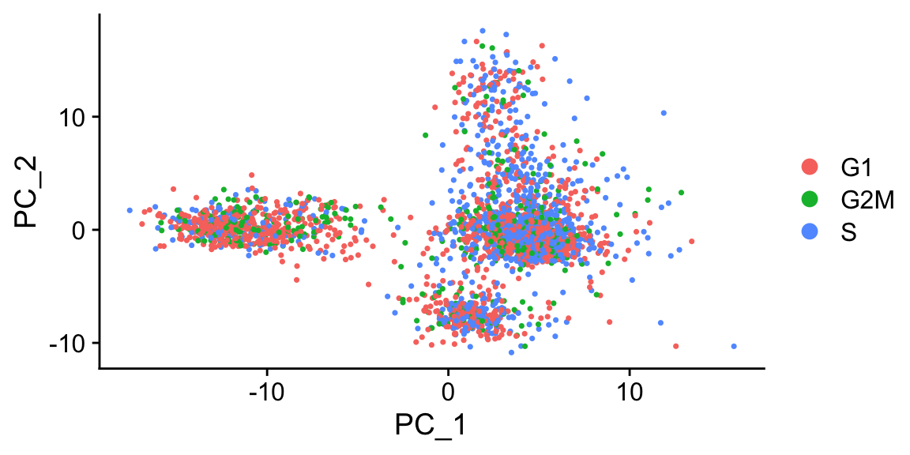
# 3. look for cell cycle-specific genes as main drivers of PCA
topPCAgenes <- apply(
sobj_l@reductions$pca@feature.loadings, # contribution of each gene to each PC is stored here
MARGIN = 2,
FUN = function(x) names(sort(abs(x), decreasing = TRUE)[1:10]) # finds the most important genes in each PC
)
topPCAgenes
#> PC_1 PC_2 PC_3 PC_4 PC_5
#> [1,] "CST3" "NKG7" "HLA-DQA1" "PF4" "CKB"
#> [2,] "S100A9" "CST7" "CD79A" "SDPR" "FCGR3A"
#> [3,] "TYROBP" "GZMA" "CD79B" "PPBP" "MS4A7"
#> [4,] "FTL" "PRF1" "HLA-DPB1" "HIST1H2AC" "RP11-290F20.3"
#> [5,] "LST1" "GZMB" "CD74" "GNG11" "RHOC"
#> [6,] "FCN1" "FGFBP2" "HLA-DPA1" "SPARC" "SIGLEC10"
#> [7,] "AIF1" "GNLY" "MS4A1" "GP9" "LILRA3"
#> [8,] "LYZ" "CTSW" "HLA-DQB1" "NRGN" "LGALS2"
#> [9,] "FTH1" "CD79A" "HLA-DRB1" "RGS18" "HMOX1"
#> [10,] "S100A8" "CCL4" "PPBP" "PTCRA" "MS4A6A"
#> PC_6 PC_7 PC_8 PC_9 PC_10
#> [1,] "GZMK" "CCL5" "FCER1A" "IFIT1" "IFIT1"
#> [2,] "IL32" "GZMK" "CLEC10A" "ISG15" "ISG15"
#> [3,] "GZMB" "FCER1A" "ENHO" "MX1" "ANXA1"
#> [4,] "SPON2" "KLRG1" "SERPINF1" "GZMK" "PTTG1"
#> [5,] "VIM" "CLEC10A" "CD1C" "IFI6" "GBP1"
#> [6,] "S100A4" "SELL" "GZMK" "OASL" "LTB"
#> [7,] "AKR1C3" "LYAR" "RBP7" "TNFSF10" "MX1"
#> [8,] "B2M" "NKG7" "CLIC2" "ACTG1" "PCNA"
#> [9,] "S100A10" "AKR1C3" "RP6-91H8.3" "APOBEC3B" "HOPX"
#> [10,] "S100B" "IGFBP7" "S100A12" "LYAR" "CD27"
topPCAgenes %>%
as.vector() %>%
intersect(c(s.genes, g2m.genes)) # see how many S and G2M genes intersect with that list
#> [1] "PCNA"
# or just check top variable genes
# if needed, regress out cell cycle effects
sobj_l <- ScaleData(sobj_l,
vars.to.regress = c("nCount_RNA", "percent_mito", "S.Score", "G2M.Score"))
# alternatively, leave the difference of cycling vs noncycling in place, only regress out phases in actively cycling cells
sobj_l$CC.Difference <- sobj_l$S.Score - sobj_l$G2M.Score
sobj_l <- ScaleData(sobj_l,
vars.to.regress = c("nCount_RNA",
"percent_mito",
"CC.Difference"))find all markers for each cluster
FindAllMarkers compares cells in each cluster to all other cells in the dataset. Typically, focus is given to genes upregulated in each cluster, ie markers.
# load clustered object
sobj_clusters <- readRDS("_vignettes/data/clustered_sobj.rds")
# also check/set ident to the desired comparison
Idents(sobj_clusters) %>% head()
#> AAACATACAACCAC-1 AAACATTGAGCTAC-1 AAACGCTGACCAGT-1 AAACGCTGGTTCTT-1
#> 0 2 3 3
#> AAAGTTTGATCACG-1 AAATCATGACCACA-1
#> 2 5
#> Levels: 0 1 2 3 4 5 6 7
Idents(sobj_clusters) <- sobj_clusters@meta.data$clusters
markers_df <- FindAllMarkers(sobj_clusters,
assay = "RNA", # <- be careful with sobj_sc and intergrated objects
slot = "data",
only.pos = TRUE)
markers_df %>% head()
#> p_val avg_logFC pct.1 pct.2 p_val_adj cluster gene
#> LDHB 7.282957e-247 1.1811710 0.926 0.483 9.156134e-243 0 LDHB
#> RPS12 3.142126e-222 0.8524704 1.000 0.988 3.950281e-218 0 RPS12
#> RPS25 1.258715e-211 0.8660816 1.000 0.966 1.582456e-207 0 RPS25
#> CD3D 6.379927e-201 1.0471003 0.873 0.261 8.020845e-197 0 CD3D
#> RPS27 1.100287e-196 0.7788876 0.999 0.990 1.383281e-192 0 RPS27
#> RPS3 2.473657e-192 0.7175880 1.000 0.991 3.109882e-188 0 RPS3find DE genes for specific cell groups
For more control in the comparisons, use FindMarkers. Positive average log (natural) fold change represents higher expression of the gene in cells of ident.1. pct1 and 2 are percent detected in each ident/population.
# DE analysis for 2 clusters
markers_df2 <- FindMarkers(sobj_clusters,
assay = "RNA",
slot = "data",
ident.1 = "1",
ident.2 = "2",
test.use = "t")
markers_df2 %>% head()
#> p_val avg_logFC pct.1 pct.2 p_val_adj
#> LYZ 0.000000e+00 4.586764 1.000 0.426 0.000000e+00
#> TYROBP 0.000000e+00 3.544515 0.994 0.111 0.000000e+00
#> CST3 0.000000e+00 3.459219 0.992 0.185 0.000000e+00
#> LGALS1 7.140047e-315 3.066783 0.980 0.131 8.976467e-311
#> S100A4 1.217470e-300 3.278204 1.000 0.358 1.530603e-296
#> S100A9 7.302898e-282 4.927262 0.996 0.136 9.181203e-278FindMarkers defaults to the current active ident. To use other value groups, set idents to the intended column, or use the group.by argument.
# compare control vs treated in only cluster 1
markers_df3 <- FindMarkers(sobj_clusters,
assay = "RNA",
slot = "data",
subset.ident = "1", # <- if needed, subset on current ident first, then switch idents
group.by = "orig.ident", # <- grouping cells by this metadata column
ident.1 = "control",
ident.2 = "treated")For greater control, assign new idents or new columns in metadata, and customize DE analysis pairs.
# set new idents for more customized comparisons
Idents(sobj_clusters,
WhichCells(object = sobj_clusters,
idents = "1",
expression = ZFP36 >= 1, # would usually do this for transgenes etc
slot = 'data')) <- 'ZFP36.pos'
Idents(sobj_clusters,
WhichCells(object = sobj_clusters,
idents = "1",
expression = ZFP36 < 1,
slot = 'data')) <- 'ZFP36.neg'
Idents(sobj_clusters) %>% head() # note that with this method, some cell idents might not be changed
#> AAACATACAACCAC-1 AAACATTGAGCTAC-1 AAACGCTGACCAGT-1 AAACGCTGGTTCTT-1
#> 0 2 3 3
#> AAAGTTTGATCACG-1 AAATCATGACCACA-1
#> 2 5
#> Levels: ZFP36.neg ZFP36.pos 0 2 3 4 5 6 7
markers_df4 <- FindMarkers(sobj_clusters,
ident.1 = "ZFP36.pos",
ident.2 = "ZFP36.neg")
# or something like:
# Idents(sobj_clusters,
# WhichCells(object = sobj_clusters,
# idents = "1",
# expression = sizeFactors >= 1, # would usually do this for transgenes etc
# slot = 'data')) <- 'cluster1_large'Genes of interest can then be visualized as violin plots or feature plots.
Idents(sobj_clusters) <- sobj_clusters@meta.data$clusters # plots are grouped by active ident
VlnPlot(sobj_clusters, "LYZ")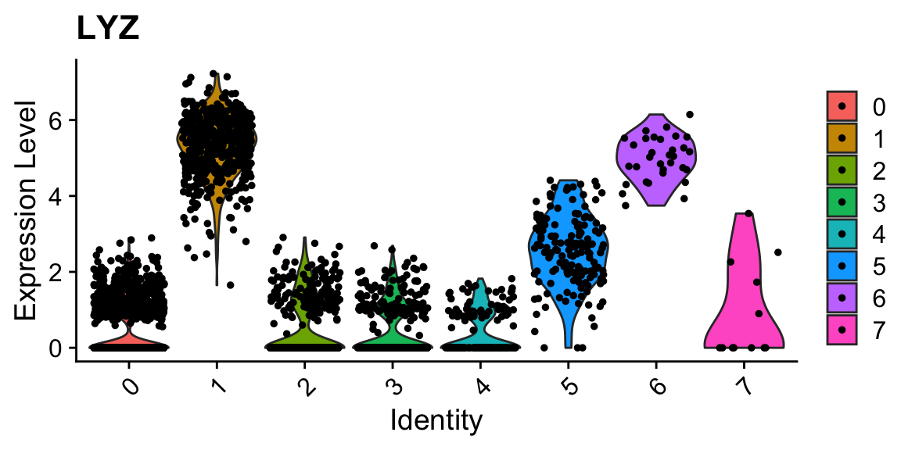
VlnPlot(sobj_clusters, c("ZFP36", "ZFP36L2")) # can be a vector of gene names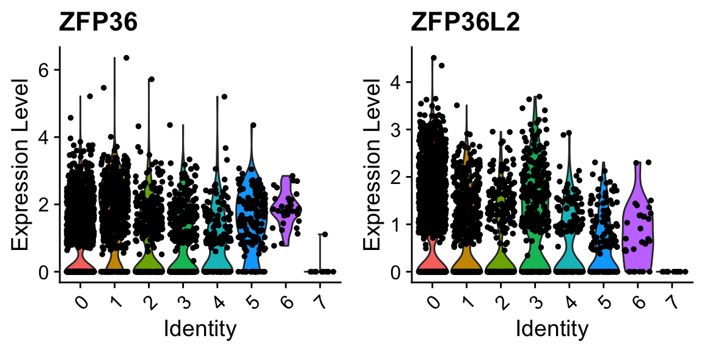
FeaturePlot(sobj_clusters, "LYZ")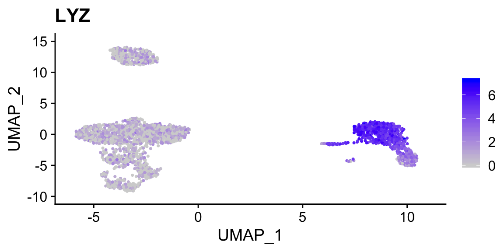
FeaturePlot(sobj_clusters, c("ZFP36", "ZFP36L2")) # can be a vector of gene names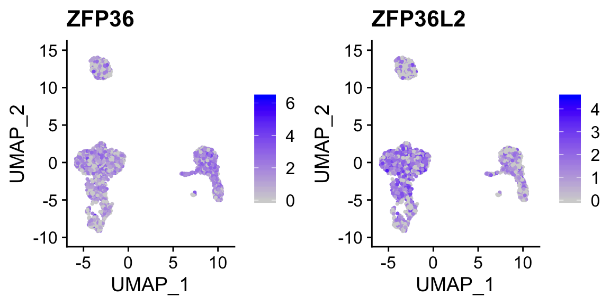
FeaturePlot(sobj_clusters, "ZFP36", split.by = "orig.ident") # <- split into panels based on metadata column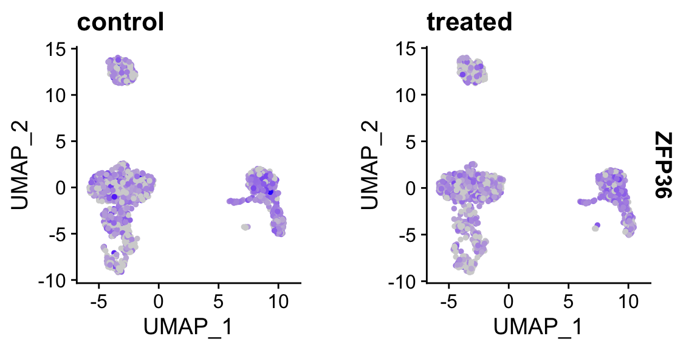
cluster identities
Without venturing into the realm of philosphical debates on what a “cell type” constitutes, standard pratice is to use certain gene expression features to classify cells. This is often done manually, by visual inspection of key genes. Automated approaches that utilize a broader range of features are currently being developed.
manual check and cluster identity assignment
# from the Seurat pancreas example
# we now have pan_celseq2, fully annotated in metadata column "celltype", and pan_smartseq2, ready to be annotated
data_url = "https://scrnaseq-workshop.s3-us-west-2.amazonaws.com"
pan_celseq2 <- readRDS(url(file.path(data_url, "pan_celseq2.rds")))
pan_celseq2@meta.data %>% head()
#> orig.ident nCount_RNA nFeature_RNA tech celltype
#> D28-1_1 SeuratProject 23438.618 5448 celseq2 alpha
#> D28-1_15 SeuratProject 27252.978 5918 celseq2 alpha
#> D28-1_17 SeuratProject 16177.715 4522 celseq2 alpha
#> D28-1_29 SeuratProject 39356.525 7416 celseq2 alpha
#> D28-1_30 SeuratProject 28958.986 6121 celseq2 alpha
#> D28-1_39 SeuratProject 7389.849 2746 celseq2 alpha
#> RNA_snn_res.0.8 seurat_clusters
#> D28-1_1 8 8
#> D28-1_15 8 8
#> D28-1_17 0 0
#> D28-1_29 8 8
#> D28-1_30 8 8
#> D28-1_39 0 0
pan_smartseq2 <- readRDS(url(file.path(data_url, "pan_smartseq2.rds")))
pan_smartseq2@meta.data %>% head()
#> orig.ident nCount_RNA nFeature_RNA tech celltype
#> AZ_B9 SeuratProject 654549 4433 smartseq2 alpha
#> AZ_A6 SeuratProject 753413 4414 smartseq2 alpha
#> AZ_C1 SeuratProject 2044839 5069 smartseq2 alpha
#> AZ_A11 SeuratProject 705927 3900 smartseq2 alpha
#> AZ_C2 SeuratProject 1338503 5367 smartseq2 alpha
#> AZ_B11 SeuratProject 3378011 7137 smartseq2 alpha
#> RNA_snn_res.0.8 seurat_clusters
#> AZ_B9 11 11
#> AZ_A6 7 7
#> AZ_C1 11 11
#> AZ_A11 11 11
#> AZ_C2 11 11
#> AZ_B11 11 11
a <- DimPlot(pan_smartseq2, label = TRUE) + NoLegend()
a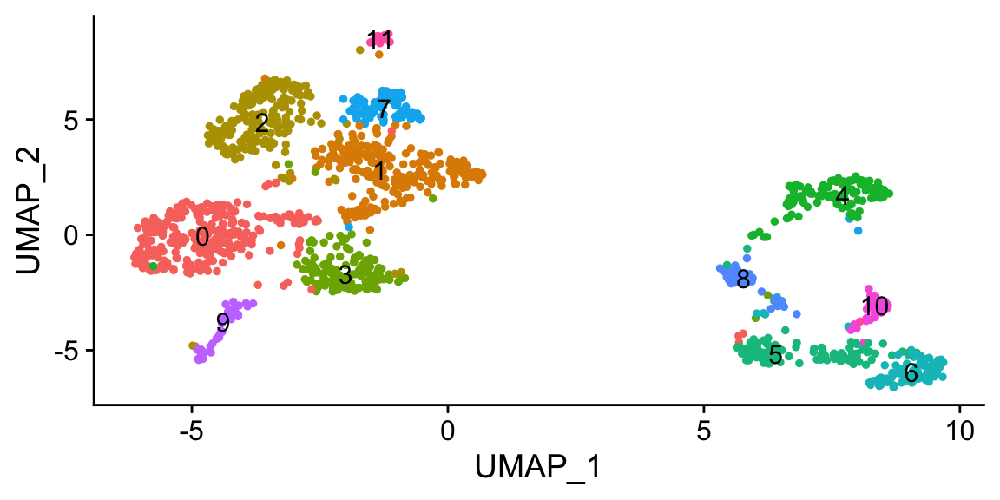
FeaturePlot(pan_smartseq2, c("IRX2","GC")) # marker genes for alpha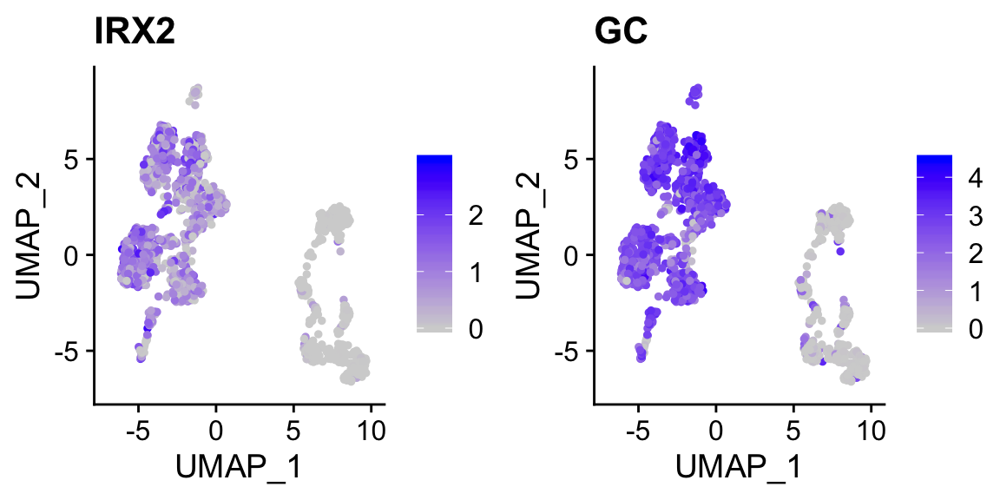
FeaturePlot(pan_smartseq2, c("IAPP","MAFA")) # marker genes for beta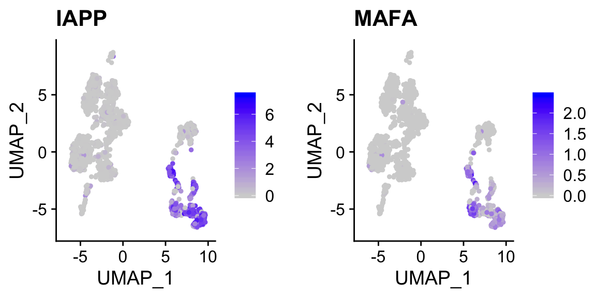
FeaturePlot(pan_smartseq2, c("HHEX","LEPR")) # marker genes for delta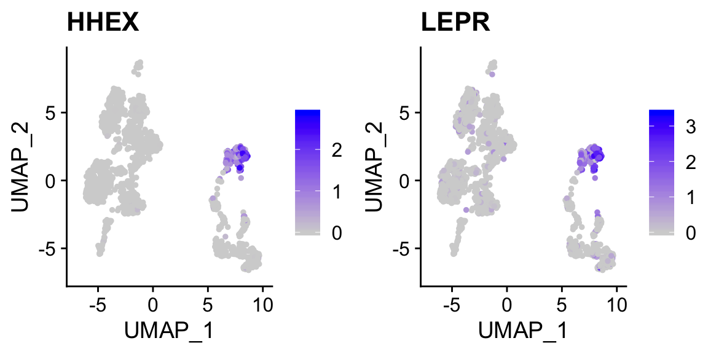
# optional, save the cluster numbers as "cluster.id"
pan_smartseq2 <- StashIdent(object = pan_smartseq2, save.name = "cluster.id") # or use AddMetaData
# Use RenameIdents to remap the idents from the current IDs to the new IDs
pan_smartseq2 <- RenameIdents(pan_smartseq2,
"0" = "alpha",
"1" = "alpha",
"2" = "alpha",
"3" = "alpha",
"7" = "alpha",
"9" = "alpha",
"11" = "alpha",
"5" = "beta",
"6" = "beta",
"8" = "beta",
"10" = "beta",
"4" = "delta")
# Plot UMAP with new cluster IDs
b <- DimPlot(object = pan_smartseq2,
label = TRUE) + NoLegend()
b
cowplot::plot_grid(a,b)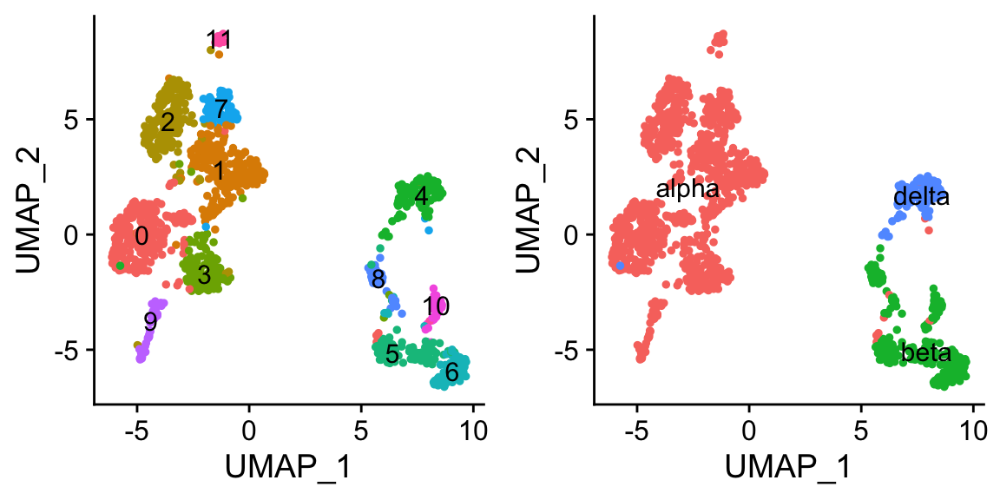
pan_smartseq2 <- StashIdent(object = pan_smartseq2, save.name = "cluster_name")
pan_smartseq2@meta.data %>% head()
#> orig.ident nCount_RNA nFeature_RNA tech celltype
#> AZ_B9 SeuratProject 654549 4433 smartseq2 alpha
#> AZ_A6 SeuratProject 753413 4414 smartseq2 alpha
#> AZ_C1 SeuratProject 2044839 5069 smartseq2 alpha
#> AZ_A11 SeuratProject 705927 3900 smartseq2 alpha
#> AZ_C2 SeuratProject 1338503 5367 smartseq2 alpha
#> AZ_B11 SeuratProject 3378011 7137 smartseq2 alpha
#> RNA_snn_res.0.8 seurat_clusters cluster.id cluster_name
#> AZ_B9 11 11 11 alpha
#> AZ_A6 7 7 7 alpha
#> AZ_C1 11 11 11 alpha
#> AZ_A11 11 11 11 alpha
#> AZ_C2 11 11 11 alpha
#> AZ_B11 11 11 11 alphatowards a more automated approach of identity assignment
- using
Seurat, inference from previous seurat object (requires very similar seurat object)
# reset idents of pan_smartseq2
Idents(pan_smartseq2) <- "cluster.id"
pancreas <- FindTransferAnchors(reference = pan_celseq2, query = pan_smartseq2,
dims = 1:30)
predictions <- TransferData(anchorset = pancreas, refdata = pan_celseq2$celltype,
dims = 1:30)
pan_smartseq2 <- AddMetaData(pan_smartseq2, metadata = predictions)
Idents(pan_smartseq2) <- "predicted.id"
DimPlot(pan_smartseq2, label = TRUE) + NoLegend()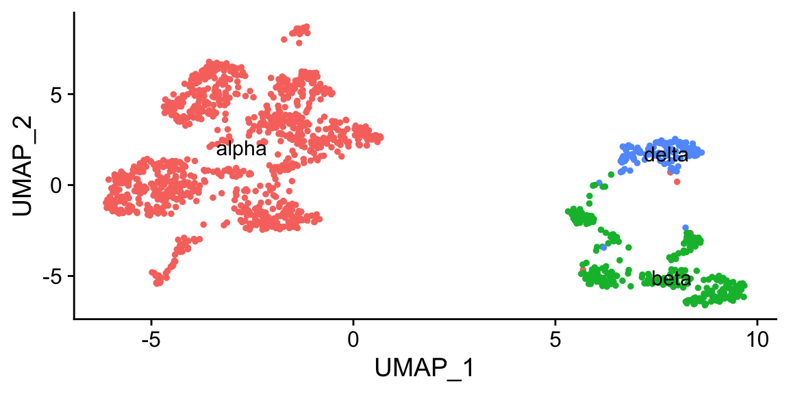
- using
clustifyr, and marker gene list (requires markers or gene list), using gene list enrichment methods
# reset idents of pan_smartseq2
Idents(pan_smartseq2) <- "cluster.id"
# manually enter gene list
library(clustifyr)
beta <- c("IAPP","MAFA")
alpha <- c("IRX2","GC")
delta <- c("HHEX","LEPR")
genelist <- data.frame(alpha, beta, delta)
genelist
#> alpha beta delta
#> 1 IRX2 IAPP HHEX
#> 2 GC MAFA LEPR
res <- clustify_lists(input = pan_smartseq2@assays$RNA@data,
marker = genelist,
cluster_info = pan_smartseq2@meta.data$seurat_clusters,
method = "jaccard") # calculate jaccard index
res # a matrix of scores
#> alpha beta delta
#> 0 2.6714700 0.0000000 0.00000
#> 1 0.8017024 0.0000000 0.00000
#> 10 0.0000000 0.8017024 0.00000
#> 11 0.8017024 0.0000000 0.00000
#> 2 2.6714700 0.0000000 0.00000
#> 3 0.8017024 0.0000000 0.00000
#> 4 0.0000000 0.0000000 2.67147
#> 5 0.0000000 0.8017024 0.00000
#> 6 0.0000000 0.8017024 0.00000
#> 7 2.6714700 0.0000000 0.00000
#> 8 0.0000000 0.8017024 0.00000
#> 9 0.8017024 0.0000000 0.00000
res2 <- cor_to_call(res, threshold = 0.5) # take the highest, and if lower than cutoff, assign "unknown")
res2 # dataframe of identities
#> # A tibble: 12 x 3
#> # Groups: cluster [12]
#> cluster type r
#> <chr> <chr> <dbl>
#> 1 0 alpha 2.67
#> 2 1 alpha 0.802
#> 3 11 alpha 0.802
#> 4 2 alpha 2.67
#> 5 3 alpha 0.802
#> 6 7 alpha 2.67
#> 7 9 alpha 0.802
#> 8 10 beta 0.802
#> 9 5 beta 0.802
#> 10 6 beta 0.802
#> 11 8 beta 0.802
#> 12 4 delta 2.67
namedres <- structure(res2$type, names = res2$cluster) # make named vector
namedres
#> 0 1 11 2 3 7 9 10
#> "alpha" "alpha" "alpha" "alpha" "alpha" "alpha" "alpha" "beta"
#> 5 6 8 4
#> "beta" "beta" "beta" "delta"
# seurat idents are factors, which may have strange behavior if coerced to numbers/index
namedres[as.character(Idents(pan_smartseq2))][1:10]
#> 11 7 11 11 11 11 11 11
#> "alpha" "alpha" "alpha" "alpha" "alpha" "alpha" "alpha" "alpha"
#> 11 11
#> "alpha" "alpha"
pan_smartseq2@meta.data$celltype <- namedres[as.character(Idents(pan_smartseq2))]
DimPlot(pan_smartseq2, label = T, group.by = "celltype") + NoLegend()
- using
clustifyr, and transcriptome profiles (from other scRNAseq, bulk RNAseq, or microarray), using ranked correlation of highly variable genes (scmap is another similar package)
# build a reference from expression matrix data
ref <- average_clusters(mat = pan_celseq2@assays$RNA@data,
cluster_info = pan_celseq2@meta.data,
cluster_col = "celltype")
res <- clustify(input = pan_smartseq2@assays$RNA@data,
ref_mat = ref,
metadata = pan_smartseq2@meta.data,
query_genes = pan_smartseq2@assays$RNA@var.features, # using Seurat computed variable genes
cluster_col = "seurat_clusters")
res2 <- cor_to_call(res, threshold = 0.5) # anything below 0.5 correlation are labeled as "unknown"
res2
#> # A tibble: 12 x 3
#> # Groups: cluster [12]
#> cluster type r
#> <chr> <chr> <dbl>
#> 1 0 alpha 0.740
#> 2 1 alpha 0.716
#> 3 11 alpha 0.673
#> 4 2 alpha 0.755
#> 5 3 alpha 0.739
#> 6 7 alpha 0.731
#> 7 9 alpha 0.741
#> 8 10 beta 0.726
#> 9 5 beta 0.787
#> 10 6 beta 0.805
#> 11 8 beta 0.787
#> 12 4 delta 0.801
# same as last section
namedres <- structure(res2$type, names = res2$cluster)
pan_smartseq2@meta.data$celltype <- namedres[as.character(Idents(pan_smartseq2))]
DimPlot(pan_smartseq2, label = T, group.by = "celltype") + NoLegend()
clustifyr also takes seurat objects as input directly, finds various needed data, and output another object with identities assigned.
ref <- seurat_ref(pan_celseq2,
cluster_col = "celltype")
res <- clustify(input = pan_smartseq2,
ref_mat = ref,
cluster_col = "seurat_clusters",
seurat_out = TRUE)
res
#> An object of class Seurat
#> 34363 features across 1443 samples within 1 assay
#> Active assay: RNA (34363 features)
#> 2 dimensional reductions calculated: pca, umap
# look at UMAP
DimPlot(res, label = TRUE, group.by = "type") + NoLegend() # saved in "type" metadata columnAlso see more tutorials at clustifyr, and prebuilt references from large scRNAseq/bulk RNAseq/microarray datasets at package clustifyrdata.
cell type composition
Insight into different samples can be gained from the proportion of cells that fall into each cell type. Unfortunately, no dedicated tools are available for statistical testing.
tab1 <- sobj_clusters@meta.data %>% group_by(orig.ident, clusters) %>% tally() # counting up all combinations
tab1
#> # A tibble: 16 x 3
#> # Groups: orig.ident [2]
#> orig.ident clusters n
#> <fct> <fct> <int>
#> 1 control 0 553
#> 2 control 1 243
#> 3 control 2 176
#> 4 control 3 190
#> 5 control 4 74
#> 6 control 5 80
#> 7 control 6 14
#> 8 control 7 6
#> 9 treated 0 589
#> 10 treated 1 250
#> 11 treated 2 176
#> 12 treated 3 150
#> 13 treated 4 87
#> 14 treated 5 78
#> 15 treated 6 18
#> 16 treated 7 6
tab2 <- tab1 %>% spread(key = clusters, value = n) # spread out into "wide" form
tab2
#> # A tibble: 2 x 9
#> # Groups: orig.ident [2]
#> orig.ident `0` `1` `2` `3` `4` `5` `6` `7`
#> <fct> <int> <int> <int> <int> <int> <int> <int> <int>
#> 1 control 553 243 176 190 74 80 14 6
#> 2 treated 589 250 176 150 87 78 18 6
tab3 <- tab1 %>% group_by(orig.ident) %>%
mutate(n = n/sum(n)) %>% # convert counts to proportions first
spread(key = clusters, value = n)
tab3
#> # A tibble: 2 x 9
#> # Groups: orig.ident [2]
#> orig.ident `0` `1` `2` `3` `4` `5` `6` `7`
#> <fct> <dbl> <dbl> <dbl> <dbl> <dbl> <dbl> <dbl> <dbl>
#> 1 control 0.414 0.182 0.132 0.142 0.0554 0.0599 0.0105 0.00449
#> 2 treated 0.435 0.185 0.130 0.111 0.0643 0.0576 0.0133 0.00443and save tables to disk with write_csv
write_csv(tab3, "data/perc_clusters.csv")
tab4 <- read_csv("data/perc_clusters.csv")other things to do with marker genes
gene list to pathway activity score, via
AUCellif TF expression is too low, consider
SCENICfor TF activity inferencestandard GO term enrichment tools
gProfiler2,enrichR,fgsea, etc etc